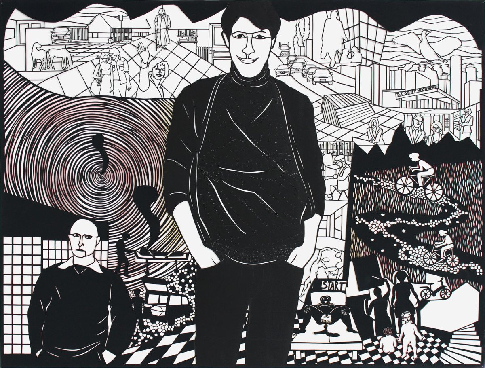

Da geht noch mehr2015Papierschnitt114 × 150 cm
Arbeiten auf Papier
Ingrid Eberspächer, geboren 1956, studierte an der Staatlichen Akademie der Bildenden Künste Stuttgart und arbeitet seit 1991 als freie Künstlerin in Frankfurt am Main. Im Zentrum ihres Werks stehen Arbeiten auf Papier.
Werk
AuswahlDie Stiftung
Gemeinnützig · [Gründungsjahr]Die Ingrid Eberspächer Stiftung bewahrt das künstlerische Werk von Ingrid Eberspächer und macht es der Öffentlichkeit zugänglich – heute und über kommende Generationen hinweg.
BewahrenErhalt, Pflege und Dokumentation der Arbeiten auf Papier. [Details zum Werkverzeichnis]
ZeigenAusstellungen, Leihgaben und Kooperationen mit Museen und Kunstvereinen. [Details]
Fördern[Stiftungszweck laut Satzung, z. B. Förderung von Kunst und Kultur]
Vita
Foto: [Fotograf:in]
- 1956
- Geboren
- 1976–1982
- Studium der Kunsterziehung an der Staatlichen Akademie der Bildenden Künste Stuttgart bei Rudolf Schoofs
- 1977–1981
- Studium der Kunstgeschichte an der Universität Stuttgart
- 1980
- Studienaufenthalt in Paris
- 1984
- Zweites Staatsexamen für das Lehramt am Gymnasium
- 1984–1988
- Mitarbeiterin der Galerie der Stadt Esslingen, Villa Merkel
- 1987
- Stipendium der Kunststiftung Baden-Württemberg
- seit 1991
- Freie künstlerische Tätigkeit in Frankfurt am Main
- seit 2013
- Mitglied im Künstlerbund Baden-Württemberg
Ausstellungen
Auswahl2019Baden-Baden, Gesellschaft der Freunde junger Kunst, Tier
2018Frankfurt, Galerie Schamretta
2017Crailsheim, Stadtmuseum im Spital, Crailsheimer Kunstfreunde
2016Darmstadt, Regionalgalerie Südhessen im Regierungspräsidium; Nördlingen, Kunstverein, dazwischen
2015Karlsruhe, Städtische Galerie, Alle, Künstlerbund Baden-Württemberg
2014Frankfurt, Galerie Schamretta
2013Engen, Städtisches Museum + Galerie, Stubengesellschaft Kunstverein Engen
2012Radolfzell, Villa Bosch, Kunstverein Radolfzell; Offenbach, Salon 13, BOK
2011Gaienhofen-Horn, Galerie Kränzl; Frankfurt, Galerie Schamretta
2010Gaienhofen-Horn, Galerie Kränzl, remember
2009Baden-Baden, Gesellschaft der Freunde junger Kunst, Vasen
2008Frankfurt, Galerie Schamretta
2006Stuttgart, Württembergischer Kunstverein, Zeichnungen, Jahresausstellung der Künstlermitglieder
2005Frankfurt, Galerie Schamretta; Baden-Baden, Gesellschaft der Freunde junger Kunst, Flagge zeigen